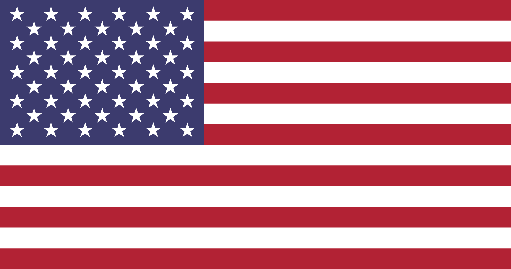
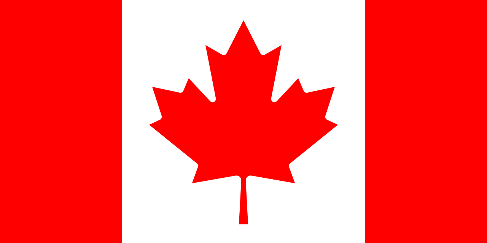
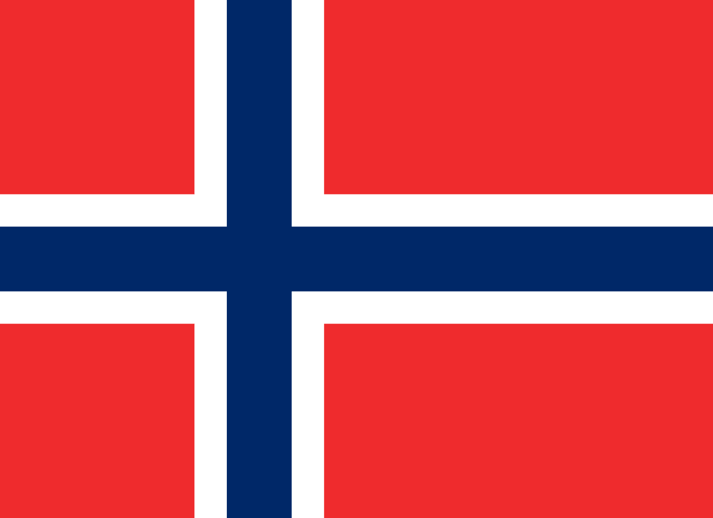

XGAMES ASPEN
Ostatnie zawody XGames odbyły się w Aspen w Stanach Zjednoczonych
w stanie Kolorado.
Cały event odbył się w okresie 21-23 stycznia 2022 roku.
Były to mistrzostwa zimowe, na których nie zabrakło wrażeń,
wielu niesamowitych sztuczek jak i upadków.
Zawodnicy musieli zmierzyć się ze sobą
w takich dyscyplinach jak Snowboarding, Skiing czy Snowmobiling!
JAMES ANDERSON
James Anderson to młoda utalentowana snowboardzistka, pochodząca z USA .
W 2004 roku wzięła udział w swoich pierwszych XGAMES,
a już w 2007 zajęła pierwsze miejsce!
Na ostatnich zawodach w Aspen, Anderson zajęła dwa razy 2 miejsce co daje jej łącznie
8 złotych medali, 9 srebrnych i 4 brązowe!
Wyniki XGAMES Aspen
2022
| Miejsce | Kraj | Złoto | Srebro | Brąz | Suma |
|---|---|---|---|---|---|
| 1 |  Stany Zjednoczone (USA) | 7 | 7 | 8 | 22 |
| 2 |  Kanada (CAN) | 2 | 2 | 5 | 9 |
| 3 | 2 | 2 | 0 | 4 | |
| 4 |  Norwegia (NOR) | 2 | 1 | 1 | 4 |
| 5 | 1 | 1 | 0 | 2 | |
| 1 | 1 | 0 | 2 | ||
| 7 | 1 | 0 | 1 | 2 | |
| 1 | 0 | 1 | 2 | ||
| 9 | 1 | 0 | 0 | 1 | |
| 10 | Austria (AUT) | 0 | 1 | 0 | 1 |
| 0 | 1 | 0 | 1 | ||
| 0 | 1 | 0 | 1 | ||
| Nowa Zelandia (NZL) | 0 | 1 | 0 | 1 | |
| 14 | 0 | 0 | 2 | 2 |
SPONSORZY